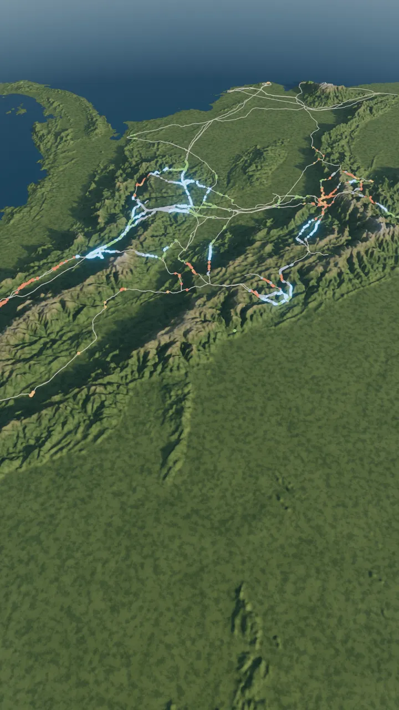
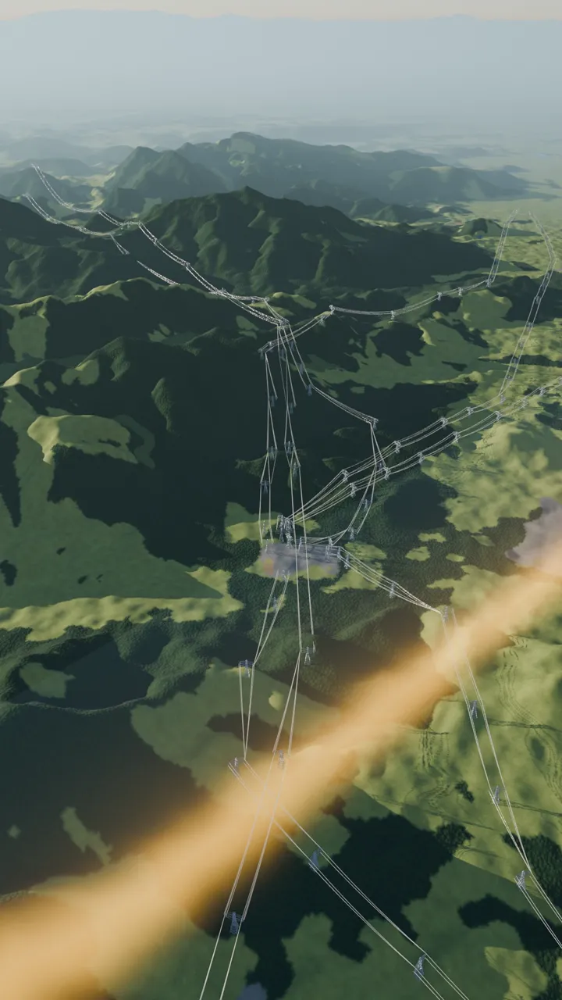

03 · Territorio Línea 1 · Territorio y red
Cincomontañas,una red
La red que lleva la energía del país no se apoya en una montaña: se apoya en cinco. Repartimos sus 22.263 torres en cinco pisos según su altura y su lluvia, y en cada piso la montaña se mueve por una razón distinta.

La malla El criterio N-1
Un camino solo no basta.
El 4 de julio de 2021 un deslizamiento en Norte de Santander dañó la línea de 230 kV que lleva la energía a Arauca. Era un solo camino, sin ruta alterna.
Según la Superservicios, ningún otro evento de la red de transmisión dejó tanta demanda sin atender ese año: 6.466 MWh. Por eso la red se diseña como una malla: si un circuito falla, la energía busca otro camino. Pero cada camino está hecho de torres, y las torres están paradas sobre montañas.
Superservicios, Diagnóstico de la actividad de transmisión 2021 (oct-2022), §2.3.1, tabla 9 · Criterio N-1: CREG, Código de Planeamiento del STN (Res. 025/1995, modificada por la Res. 044/2013).
torres de la red de transmisión dentro del corredor.
en el 15 % del corredor más propenso a moverse.
de las torres está en el piso cálido y seco, el más estable.
de las 3.613 señaladas está en el piso templado y muy lluvioso.
El ascensor Sube piso por piso
De la tierra caliente al páramo.
Desliza para subir del piso 1 al 5, o toca un piso. El porcentaje de cada botón es la parte de sus torres que queda en el 15 % más propenso del corredor.

Diecisiete veces Inventario nacional
La franja templada y muy lluviosa.
Es el 12 % del corredor y guarda el 39 % de los eventos del inventario nacional: 17 veces más deslizamientos por km² que el piso cálido y seco.
Aquí contamos solo el inventario nacional, para no inflar la cifra con el esfuerzo de nuestra fotointerpretación, que se concentró en algunas zonas. Más de la mitad de las torres de este piso, el 55 %, queda en el 15 % más propenso del corredor.
Uno contra cinco ¿Expertos o generalista?
Un solo modelo les ganó a cinco.
¿Cinco modelos expertos, uno por piso, o uno solo que aprenda de todo el país? Ganó el modelo único en los cinco pisos.
Una explicación posible es que, al aprender de todas las montañas a la vez, tiene muchos más ejemplos. Aun así, lo que más pesa cambia de un piso a otro: por eso conviene mirar cada montaña con su propia lupa.
Las líneas Cruzar todos los pisos
Cuatro líneas suben las cinco montañas.
De las 162 líneas con torres en el corredor, la mayoría se queda en un solo piso. Cuatro los atraviesan todos, desde menos de 700 m hasta más de 2.400 m de altura.
| Línea | kV | Torres | Altura |
|---|---|---|---|
| Jamondino – San Bernardino | 230 | 340 | 662–3.123 m |
| Betania – San Bernardino | 230 | 297 | 559–3.468 m |
| Antioquia – Heliconia | 500 | 208 | 526–2.495 m |
| Los Palos – Tasajero | 230 | 192 | 358–2.984 m |
¿Quieres ver cómo cambia cada variable sobre una ladera real? En la maqueta 3D del capítulo 2 puedes pintar el relieve con la lluvia, la geología, la cobertura o las fallas, y separarlas en láminas.
El video 2:21 · versión vertical
Cinco montañas, una red.
Un ascensor por los cinco pisos de la red, con tomas 3D de relieve, cobertura y torres reales.
Los clips rotulados «Recreación con IA» en el video se generaron con Veo 3.1 y son ilustrativos: no muestran lugares ni torres concretos. Franja cafetera: Cenicafé–FNC, Manual del cafetero colombiano (2013).
Música: «Artemis», de Scott Buckley, y «Divider», de Chris Zabriskie. Edición y mezcla para la trilogía bajo CC BY 4.0.